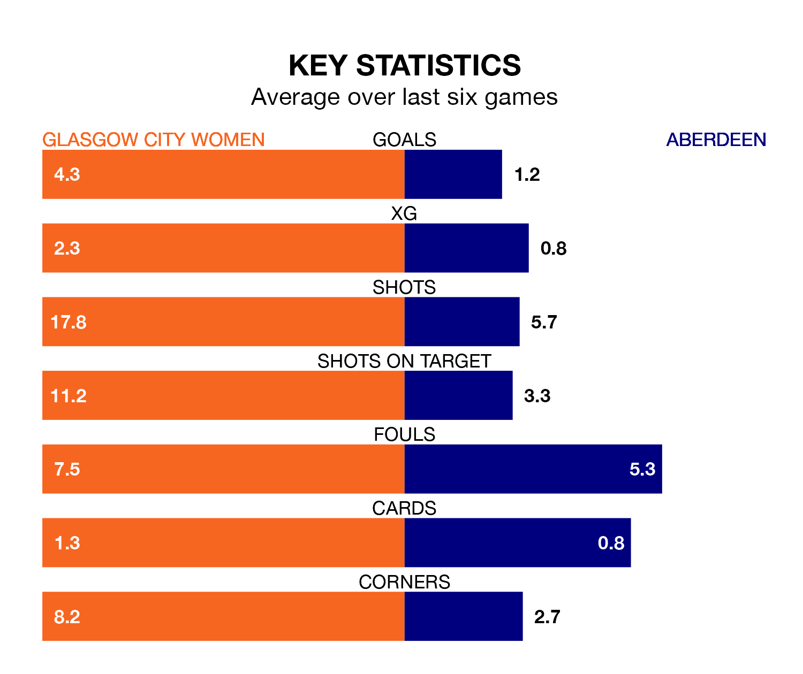

Glasgow City Women host Aberdeen at Petershill Park on Sunday lunchtime on the back of nine consecutive wins in SWPL 1.
It means Glasgow City have picked up the maximum 27 points from their last nine games, and they face an Aberdeen side who also won their last match, and have collected 10 points from the last possible 27.
With 64 goals in 21 games so far this season, Glasgow City are the league's third-highest scorers with 3.0 goals per game. And they are conceding fewer than average, letting in 12 goals at a rate of 0.6 per game.
Aberdeen, meanwhile, are below average scorers, with 1.6 goals per game, compared to a league average of 2.1. They have conceded 3.0 goals per game.
In the last 10 years, Glasgow City and Aberdeen have played each other on seven occasions. Glasgow City won all of them.
On average, Glasgow City scored 5.1 goals and Aberdeen 0.7 in those matches.
Their last meeting was on October 15, when Glasgow City won 3-2 away.
In Lee Alexander, the home side can rely on one of the league's safest pair of hands. She has kept seven clean sheets in her 13 appearances this season, and only two other 'keepers – Rangers Women's Jenna Fife and Celtic Women's Kelsey Daugherty – have been able to prevent the opposition scoring on more occasions in SWPL 1.
In the visitors' net, Faye Mary Kirby has two clean sheets in seven games. She has conceded a goal every 55 minutes, nearly three times as often as the 146 minutes between goals for Alexander.
Glasgow City are third in the table after 21 games, of which they have won 17 and drawn two, earning 53 points.
Aberdeen are four places behind Glasgow City in seventh, with eight wins and one draw putting them on 25 points.
Glasgow City's last match was on February 18, a 3-0 win against Motherwell Women, with Lauren Davidson (two) and Bailley Collins (own goal) getting the goals for Glasgow City.
Aberdeen beat Dundee United Women 4-3 last time out, also on February 18, with Eilidh Shore (two), Bayley Hutchison and Hannah Stewart on the scoresheet.
Updated: 12:18 (UTC), 19/02/24